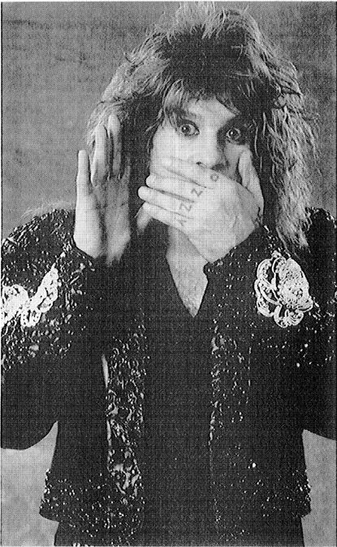

“Burning Up the Night”
—Krokus
At the concert the constitution of metal as a cultural form becomes concrete, as each of the actors in the constituting transaction meet. The concert is the event that epitomizes the cultural form and brings it to fulfillment. In the preceding chapters the constitution of metal as a cultural form has been interpreted through the perspectives of each of the constituting actors. Their order of appearance followed an order of cultural significance: the artist creates the music and is brought together with an audience through the offices of the media. The transaction can also be described in another way, which emphasizes social structure. In this case the artist stands between the two worlds of the audience and the media, and the transaction is one in which the audience pays the media to deliver an artist to it. Here the artist functions in two ways, as a commodity for the media to sell and as a culture hero for the audience to admire. That is the structure of the concert.
The great divide in the concert is between the backstage and the frontstage. Backstage is the world of the media, governed by functional specialization, calculations of financial interest, and instrumental rationality. Frontstage is the realm of the audience, ruled by a sense of community, adherence to the codes of a valued subculture, and expressive-emotional experience. The stage itself is the site of the mediation of these two worlds by the performing artist who binds them together with the music. Media and audience share two radically different interests in the same thing, the music. The artist, in bringing the media and the audience together, must belong to their different worlds; he is a trickster figure, combining opposites. The artist is the bricoleur of the bricolage that is the concert.
There are all manner of concerts. They differ in size of venue, type of crowd, numbers in the audience, solidarity of the audience, expense and elaborateness of production, and quality of the performance. In addition, there is a significant set of structural differences between thrash metal concerts, on the one hand, and classic and lite metal concerts, on the other. The paradigm for the following discussion is the classic metal concert presented in its most positive or fulfilled form. Comparisons with the thrash concert will be made along the way.
The backstage/frontstage binary opposition that structures the concert is not unique to it. The Edwardian mansion, celebrated in the popular television series “Upstairs Downstairs,” is another such social structure. Similar, too, is the bifurcated world imagined by H. G. Wells in The Time Machine, where the ugly Morlocks toiled underground and the attractive Eloi played in the sunshine. Erving Goffman’s distinction between frontstage and backstage has an informed understanding of the vast array of organizations that deal with clients, customers, and the public. Backstage is defined by Goffman “as a place, relative to a given performance, where the impression fostered by the performance [frontstage] is knowingly contradicted as a matter of course.”1 At a heavy metal concert the two sides of the binary opposition are kept so separate that they define two different worlds of experience, opposite to each other along a range of essential dimensions.
The backstage is a microcosm of the modern world in its advanced stage of economy and technology. Primary and secondary economic activities are not in evidence. Only the tertiary, the so-called service economy, is present. The personnel vary from grunt laborers, whose major assets are their brawn, to highly skilled, sometimes formally trained, technicians. The division of labor is extensive and, for large tours, intensive. The backstage is uniform wherever it appears around the world. It is based on an invariant technological and social apparatus, which can bring forth the most different appearances on the frontstage.
Aside from possessing different kinds and levels of skill, the workers vary according to whether they travel with the band. The basic retinue of a group includes technicians in charge of the various instruments, roadies (often doubling as gofers), and a tour manager. Except for small tours, a host of others also accompany the band. There are people to work the sound and lighting boards, people to take care of the band’s wardrobe, and a pyrotechnician to control the special effects. Even midsized tours begin to resemble a premodern royal retinue during its progress from the winter to the summer castle, except the metal tour’s entourage includes personal trainers, bodyguards, chefs, photographers, accountants, and hairdressers. As one wag put it, a tour involves mobilizing as much “manpower and machinery [as] you are likely to encounter outside of a small war.”2
Some concert workers are permanent employees of the venue, while others, such as electricians and Teamster-affiliated loaders, are hired wage workers. Others are employed by such suppliers as lighting companies and caterers. Security guards form another group of locals; when they are hired by the promoter on a per-concert basis, rather than being attached to the site, the security personnel for heavy metal concerts are the biggest and bulkiest guys around.
Backstage workers are further distinguished from one another by the rewards they receive. Some are on salary, others get paid hourly wages, some are paid a one-time fee, and others receive a percentage of the gate or of the merchandise sold. The amount of remuneration can vary dramatically, as it ordinarily does in a highly differentiated production apparatus. Those who ride the tour bus, however, no matter what their job, often get the same per-diem cash allowance for incidentals.3
Money, of course, is the basic compensation for service in the backstage world, but workers are also rewarded with other perquisites and pleasures that are regarded as valuable. Here, too, diversity is the rule. For example, some people enjoy easy access to the band, whereas others barely meet the performers. Some workers are given tour jackets or get to stay at hotels rather than sleep on the bus. Groupies are differentially available. Aside from the performers, security men have more access to them than others: “The name of the game became ‘If you want to ball the star, you’ve got to ball me first.’ ”4
Georg Simmel’s discussion of how time dominates the modern world applies pointedly to the backstage: “The relationships and affairs . . . are so varied and complex that without the strictest punctuality in promises and services the whole structure would break down into an inextricable chaos.”5 The workers, from such different backgrounds, specialties, and interests, are integrated by a “stable and impersonal time schedule.” They are told when they may start and when they must complete their tasks. The overall schedule, such as dinner for the crew and stage times for each band, is prominently posted. When the concert is over, the tour buses do not leave until the set is loaded out. The musical instruments and the vast array of electronic and mechanical devices linked to them, the parts of the stage set, and all property of the band and its assistants must be put on the trucks. On small tours, everything and everyone is crammed into a van. Larger tours use one or more buses and one or more trucks. The roadies and sometimes the technicians who pack up the sophisticated equipment seem to make a sport out of seeing how fast they can load out. Roger and Martyn Dean, speaking about designing the stage sets, describe the impact of that game: “The effect of the finished stage was so impressive, the illusion of an alien technology so complete, that it is easy to overlook the practicalities of putting something so complex on tour at all. It is not only what the set looks like on the stage that matters, it is how it travels, how it fits into the back of a truck. The road crew are going to be moving it every day for several months, and anything that does not work is soon going to be smashed. Loading a truck after a gig is a high-speed art.”6
Time differentiates the backstage personnel. Their peak work times do not coincide. Some of them work prior to the concert, such as the guy who sets up the drum kit and checks the miking for it, and the security manager who discusses the strategy for that evening with his crew and assigns them to different areas. Others work during the concert, such as those manning the sound and lighting boards. The roadies do most of their work well before and after the concert. Finally, when everyone else has completed his job, the bus driver begins his. The uneven distribution of tasks over time means that the people who are living together and sharing the same space for weeks, if not months, at a stretch, do not fully live together. The effect of differences in work schedules was observed when some drugs were passed around on a tour bus about an hour and a half before a concert was to begin. Three people refused them, saying that they would indulge after the concert. They were working during the concert and wanted to be as fully in control as possible. Those who did indulge were off, having performed their duties earlier, and could fully relax. People who work before or after the concert have the choice of viewing it or not. Here, too, there is no uniformity, but a continuum ranging from those who adore the band and never miss a performance, to those who are not at all keen about the music and tend to avoid it.
The individual concert falls into a wider temporal series of events. The whole series is called the tour. Bands name their tours to give them greater cohesion and to sell T-shirts with the tour’s name on them. Long before the first date of the tour much “backstage” work is already done. The time-consuming process of designing and building stage sets has been completed. The lighting has been designed, sometimes by or with the aid of the lighting technicians who will work on-site at the concert. The sound-board technician also had to be present for concert rehearsals. The band’s management, one or more members of whom accompany the tour, have had to plan its particulars, such as concert dates, transportation, securing equipment, and the like. Caterers have been booked. The record company and the band’s management have usually worked together to coordinate press passes and interviews, and other promotional arrangements, such as in-store appearances. Members of the metal press, the interviewers and photographers, have been given backstage access. The local metal deejay, who invariably announces the group to the audience, will also be there.
The backstage complexity is not fully rationalized, since there is no single bureaucratic hierarchy of authority. Some workers are ultimately subordinate to the tour manager, others to the venue manager, and others to the promoter. In cities where some of the local workers, from grunts to electricians, belong to powerful unions, there are further independent power bases. The representatives of the communications media, the groupies, and assorted others with backstage access have no obvious superiors present, with the possible exception of the security force. The backstage area is polycentric, characterized by multiple centers of power rather than by a monocratic hierarchy of authority.
The backstage of a heavy metal concert is not unique in its complexity as a work site, but it surely ranks as one of the most complex. It shares features with a number of other settings that have been studied by sociologists. In his classic study of the restaurant, William Whyte detailed how this system of interdependence required that all the workers perform their tasks properly in order for each one to do his or her special task correctly.7 The formal structure of the restaurant does not hint at the informal interactions and the attitudes necessary to make the whole function. The same holds true backstage, where the social organization is far more intricate than it is at a restaurant. The interdependence of the backstage crew is a source of frustration, bordering on panic, when someone fails to do an assigned task in an effective and timely manner. However, when everything functions smoothly on a tour, the acknowledgment of interdependence and the extended interactions create a sense of solidarity in the crew, a feeling of “family.”
Whyte describes the devices that waitresses use to give orders to male cooks. The problems faced by the waitresses in 1949, when his study was done, are not so different from those encountered by female workers at heavy metal concerts. A female lighting technician from the local area had to negotiate with male union electricians and male light designers/technicians traveling with the tour. She had to prove her mettle physically and symbolically before they would accept that she had expertise and a legitimate sphere of competence.
The stage itself is the key site on which the backstage world converges, although many members of that world, bus drivers and caterers, for example, never set foot on it. The stage at an arena is much like the operating room of a hospital.8 Both are the focal points of the larger sites. A series of differentiated workers coordinate shifts of activity to ready both of these “theaters” of operation. Nurses arrive on the surgical floor as maids are finishing the cleaning. Their aides bring in tables of sterilized implements and these are laid out for use by the surgical team. In like manner, at the concert, technicians set up the equipment, attaching wires and laying tape over them on the floor, after the roadies have brought in the boxes of equipment. Supplies and equipment are ready to hand, with provision made for emergencies. Only when everything is in position, including the prepped patient or audience, do the stars appear on the scene. Surgeons do not make grand entrances, accompanied by majestic music, lights, and wild cheering by the patient. But, in their respective worlds, the surgeon and the band are the necessary agents who set the prepared scenes in motion. Prior to their entrance all is prologue—preparation by the backstage workers and anticipation by the patient or audience.
The analogy of the audience to the patient does not work as well for heavy metal as it does for other forms of rock or for pop. The audience that greets the heavy metal band, and does so emphatically, is not a mass audience passively subject to transient excitements. The concert is more than a voyeuristic spectacle for the heavy metal audience, which is in great part self-prepared and participatory. It is prepared to have specific emotional experiences, to affirm itself as a subculture through ritual activity, and, finally, to celebrate the music and its bearers as a celebration of itself as a subculture. The audience is a coconstitutor of the events that will unfold in the concert.
The metal audience has prepared for the concert with as much diligence as the backstage crew, though in radically different ways. When the band triumphantly appears on stage all three actors in the metal transaction—the media, the artists, and the audience—have prepared the way for the concert to approach its ideal form. The work done by the members of the audience can be summarized in the phrase “getting pumped up for the concert.”
Prior to the day of the concert, the fans bought tickets, often spending hours in line before they went on sale so that they might get good seats or out of fear that the concert might sell out. They have talked with friends about the upcoming concert, speculating on what will be seen and heard there, and generating enthusiasm. They have listened to the band’s albums, anticipating hearing the songs performed live. On the day of the concert they dress in their metal uniform, which is often a special variant of their everyday garb. “Dressing up” for a concert, the way people dress up for a wedding or some other formal occasion, is not proper here, but there is a special code for choosing concert clothes.
Thought must be given to the specific metal T-shirt to be worn. If one of the concert bands is a fan’s favorite and he or she happens to own a shirt displaying that band’s logo, that T-shirt will be the fan’s first choice. If a certain favored band member had previously performed with another band, that former band’s T-shirt would also be appropriate. Any other band’s T-shirt or a shirt advertising Harleys or some brand of beer would also be acceptable. The point is to represent the primary symbols of the subculture on one’s body. Until the mid-1980s all T-shirts were black, short-sleeved, and crew-necked. Modifications, such as ripping off the sleeves or the neckband, enhance the look. Since then, the growth of merchandising as a significant generator of profits has spawned a wide array of colors and styles for the band’s official clothing.
Travel to the concert, either by car or in the buses favored by British fans, is a celebratory experience. Tapes of the concert bands are played, and beer and pot are frequently consumed. Arriving at the site, one finds oneself amidst a sea of people who are playing similar tapes, imbibing similar substances,* and looking not unlike oneself in clothing, hairstyle, and general demeanor. The accent is on identification with the others, on mechanical solidarity, in contrast to the organic solidarity of the work crews.
The contagion of excitement generated during travel to the concert is extended to others whom one has never met before, but who are obviously members of the subculture. Nor is everyone a stranger. Nodding to people one has seen before at other concerts, or looking for friends and acquaintances, is a usual preconcert pastime. When the tickets indicate assigned seats the parking-lot scene is characterized by leisurely excitement, but if the concert is general admission, getting on line enhances the anticipation. How close to the stage can one get? Serious fans have shown up at the venue hours earlier to position themselves for the best seats, or, more likely, the floor spaces closest to the stage. Metal fans do not follow the band caravan-style, camping out, the way Deadheads do. When a favorite band is playing more than one date in the vicinity, it is unusual, but not unknown, to see the same fans several nights in a row at different venues.
The economics of concerts in general and the particular importance of extravagant stage sets in heavy metal means that major bands play only at the larger venues. Fans who do not live close to such sites often travel long distances to reach them. British fans, in part because the core audience in Britain is larger, and in part because the excellent system of motor coaches reduces much of the onerousness of a long ride, are willing to endure longer travel than Americans. To get to the Monsters of Rock Festival held at Castle Donington some fans had to be on the bus by dawn: “We set out for Donny at 7:00 a.m. from Louth by coach. We arrived at Donny at 2:10 p.m., missing Helloween altogether and just catching the last couple of minutes of Guns N’ Roses. A journey that would take just a couple of hours took seven hours (talk about traffic jams).”9
“Just” a couple of hours travel to and from a concert is not viewed as an unusual hardship. One of the major outdoor heavy metal venues in the Chicago area is located about ninety-five miles from the center of the city. The trip is not perceived as a bother. Since travel and waiting in line for the venue to open generate excitement, the longer it takes the better the audience is prepared for the concert. Once inside, the excitement grows. The density of people per square foot increases; if one is standing near the stage that density can approach its theoretical maximum. Beer and drugs are consumed. Music blares from the loudspeakers, not nearly as loud as the live music will be, but far from aural wallpaper.
The major requirement that the audience must fulfill to cocon-stitute a good concert is to mold itself together into an approximation of a community for the event. That requisite is achieved by its members’ adherence to subcultural norms, including codes of visual style and commitment to the subculture’s values.
The heavy metal subculture’s rules of fashion are heeded, creating a uniform that encourages identification. The merchandise stands are situated at the entrance to the venue, and the enthusiasm for a given group can be gauged by the number of fans who buy and immediately put on the band’s tour T-shirt. Decorated jackets with band logos are worn by fans with something resembling the pride in his medals of a veteran at a Memorial Day celebration. In the United States the jackets are created with purchased patches and buttons. In Great Britain, jackets may have had embroidery depicting logos or, more ambitiously, favorite album covers. Artistic creativity is also expressed through the drawing and painting of banners, which the creators proudly display for the rest of the audience long before the band or the radio deejay, who may have run a banner contest, can see them. The rest of the audience actively examines and evaluates these works.
Long hair that may have to be worn pulled back at work hangs free at the venue. Inside the site the fan’s demeanor changes. A parallel but different phenomenon has been observed at classical symphony concerts: “From the moment of entering the building one’s behavior changes, becoming more formal and inclined to be muted.”10 Elias Canetti is astonished by this behavior in which “all outward reactions are prohibited. People sit there motionless, as though they managed to hear nothing. It is obvious that a long and artificial training in stagnation has been necessary here. We have grown accustomed to its results, but, to an unprejudiced mind, there are few phenomena of our cultural life as astonishing as a [classical music] concert audience. People who allow music to affect them in a natural way behave quite differently.”11 Of course, the metal audience does not change toward formality and hushed tones, but in the opposite direction. As they enter the arena the fans move with a bit more of a lumbering swagger and bounce to their step, and their voices become louder.
During the time before the concert the aesthetic standards of heavy metal are expressed and represented. Conversation is almost exclusively concerned with the genre, and one can always hear judgments about which albums and which lineup are a group’s best. Other discussions range from who is the best guitar player and why he is best, to why the sound quality of records pressed in Japan is better than the quality of recordings made elsewhere. The bands on the concert’s bill are the center of attention, but they are compared and contrasted to others with similar styles. Taking part in these conversations establishes one’s metal bona fides and reinforces and teaches the common standards of criticism.
Information (trivia from an outsider’s perspective) is more highly valued than interpretation. Commitment is displayed by becoming a walking encyclopedia of metal lore, a fount of facts. It is perfectly acceptable to ask a nearby stranger a question about any of the bands on the bill. It is a way of making connection, not unlike the “What’s your sign?” line used at a singles bar, although with the intention of identification, not of cathexis.
Aesthetic standards are also articulated in reactions to the recorded music played over the loudspeakers. Songs by favorite groups are greeted with much cheering. Nonmetal groups, especially pop or disco bands, are emphatically hooted and booed.12 Bands often supply tapes of music that they wish to have played before they take the stage. Some metal groups play tapes of the music that has influenced them, which may include classical music from appropriate nineteenth-century romantic composers.13 The recorded music, whatever else it is and evokes, is not the live music that the audience has come to hear. It makes the audience aware of waiting, increasing their anxious anticipation and excitement.
Indulging in the approved alcoholic beverages and drugs is another feature of the wait. Martinis or fancy mixed drinks with decorations are not to be found at heavy metal concerts. Some fans sneak in a pint of Jack Daniels or other hard stuff, but the drink of choice is beer. Quality is not the issue; only quantity matters. Fans delight in big containers. If only small cups are sold, people insert their full cup at the top of a growing column of empties. Beer has a Dionysian significance at the concert, aiding and representing release into ecstatic experience.
When drugs are used, the drug of choice is pot, whose smoke, especially before the “War on Drugs” in the United States, was thick enough in the air to provide those not directly indulging with a “contact high.” But the antidrug war has even permeated heavy metal concerts. W.A.S.P., in 1989 concerts, showed a film and lectured the audience about the evils of crack, coke, and heroin. The crowd cheered when it was over.14 W.A.S.P., however, made no mention of beer (or of any alcohol) or of pot. Quaaludes are also frequently consumed at concerts. Their effect is described as being similar to drinking a six-pack of beer, without the need to continually empty one’s bladder. A visible side effect of ingesting ’ludes is the desire/need to spit constantly. Belying their slob image, most fans use an empty cup, placed on the floor between their legs, as a cuspidor. Other drugs are not unknown. Cocaine use became evident when cocaine became popular with older and more affluent adolescents. It was not snorted dramatically from mirrors with rolled-up bills, but was taken surreptitiously with small inhalers made for the purpose. Coke was usually not shared, except between very close friends.
Drugs, of course, are found at other rock concerts. At Grateful Dead concerts they are rather openly hawked in the parking lots: “Shrooms! Tabs!” yell the sellers. Pearson suggests that the Deadhead’s “sacramental use of drugs dates back to the origins of . . . Acid Tests in the mid-1960s, and is inextricably linked to the scene’s origins.”15 For the metal subculture drugs have no ritual significance; they are used simply to promote the experience of getting wasted. The behavior exhibited by those who indulge in drugs at concerts is not very different from that of those who “just say no.” This observation was confirmed at Christian metal concerts, where the members of the audience do not “do” drugs or alcohol, but behave no differently than a secular group of headbangers.
The audience builds solidarity through its commitment to the concert. Travel times, waiting on line, and ticket and merchandise costs are burdens that are stoically, and sometimes proudly, borne. At outdoor and at crowded, smokey indoor venues the ambient climate is another ordeal. A British metal fan notes some of these inconveniences: “Donington for me, and for every other head-banger in this country, is the heavy metal event of the year. You might not go to any concerts in the year, but you just can’t miss Donington. But Donny has to be the worst [outside] venue in England, because it’s in the middle of nowhere, there’s no proper parking for cars, bikes, coaches, etc. Everything is so badly disorganized. Of course when you get to it it’s one big rip off. The cost of sweatshirts is around £20.00, tee shirts are around £8–£12.00 and programmes cost £5.00, plus you have to wait for ages in the queue, and being England, 9 out of 10 times it rains. This is the biggest pain in the arse, standing on the same spot for ten hours in the pouring rain, with mud up to your knees. . . . Don’t get me wrong, I’m not having a moan, that’s the way it is. You can have one hell of a good time. . . . it’s a pity it’s only once a year.”16 One bears these costs proudly, just as the member of the subculture bears the image of the proud pariah.
Finally, the audience must constitute itself as a community of comradeship, albeit a transient one. Using Tonnies’s term, the members of the audience create a gemeinschaft. Far from being calculating and suspicious, as participants in a gesellschaft are, they behave in a manner closer to the ideal of philia, the “brotherly love” that was valued in the hippie counterculture. Goods are shared with others, including with those who are not known to one another except as members of the audience. Joints and cigarettes are passed around, and so is beer when it is hard to obtain otherwise. Those who bring binoculars not only share them with neighbors who ask to use them, but often proffer them to those nearby. Consideration for others, a basic politeness, is another characteristic of the gemeinschaft created by the heavy metal audience. Places on line, seats, and even undemarcated floor spots are saved, and not just for friends. For some time I thought that the amicable treatment I received was due to my demographics, my status as an adult female. I thought I was being indulged, sort of like a pet. But I started to notice that behavior toward me, or toward other females or older audience members, was no different from conduct toward the demographically modal seventeen-year-old males.
People make sure that they are not blocking the view of someone far shorter than they are. If asked to move slightly, they respond with alacrity. Walking around the concert area before or after the show, when the foot traffic is very dense, people try hard not to bump into one another. Similarly, even when standing packed in front of the stage, the proxemic rule of metal is observed: Do not touch. If you happen by accident to do so, you give a brief nod of apology.17 People walking around on crutches or with canes are safer in a metal crowd than on a crowded city sidewalk.18 That these standards of behavior exist is evidenced by the outrage expressed at growing signs of their violation. “More and more people don’t give a damn about their fellow metal fans,” complains one headbanger. More will be said about reactions such as this one when the rules of thrash concerts are discussed.
Every so often a beach ball, inflated condom, beer cup, glow-in-the-dark plastic novelty, roll of toilet paper, or some similar object is seen sailing around the waiting audience. This play symbolizes the relations among those in the arena. The object is a gift freely given to any member of the audience. It is not kept but reciprocated by giving it to someone else. The choice of the recipient is random, showing that all members of the audience are equal.
The audience has done its work. It is now a pumped-up, self-conscious, and unified metal community. The backstage workers have completed their preparations. The stage is ready, the mikes have been tested, the bottles of beer are strategically placed for easy reach, and the little red lights on the stacks of amplifiers are lit. Everything is at the ready, but nothing is happening. Someone starts chanting and immediately all join in the refrain: “We want Sabbath, we want Sabbath,” or “Priest, Priest,” or “Maiden, Maiden.” Fans intone the familiar form of the band’s name, rather than its official name, over and over. The duration of the chanting is a good indication of the esteem in which the band is held by the audience and of its own level of excitement. But sooner or later the voices die down, only to start up again some time later. Then, during the chants or between them, the wished-for signs occur. The recorded music stops and the house lights go out, leaving the audience in a primordial darkness. Everyone immediately rises, feet either planted on the floor or atop seats, and they produce a deafening roar. Cigarette lighters are held ablaze. A split second later (or was it a lifetime?) the audience is drowned out by the blasts of magisterial music preceded by the excited cry of a local deejay at the microphone yelling a brief introduction to the group, and the stage emerges from its blackness.
One cannot make sense of what one sees immediately. One blinks and stares; the effect is somewhat like emerging from a long, dark tunnel. But this is no ordinary vision, and eyes widen in amazement and disbelief at what they see. The band is simply there, emerging from nowhere, out of the dark and often out of flashpots or fog. Concentrating on the performers is made difficult by the stage set, which commands the center of visual attention. Before what the set represents can be understood, it is perceived as shapes and color.
What is it? Materially it is wood, cloth, metal, and paint; surfaces receiving and reflecting a myriad of moving lights of different colors and intensities. The stage set is hard to read because it is an illusion of something else. What is it supposed to be? One must look more closely because it is not a depiction of some ordinary, familiar scene. It is something like a castle, or maybe like a dungeon, or, most often, it is not specifically anything. What is seen and the way it comes into being is the stuff of fantasy, of dreams, not of this world.
The concert starts, following the order established in AC/DC’s proclamation that there be sound, light, drums, and guitar. But that is not all. As a whole, a heavy metal concert encompasses a very dense and wide variety of communicative actions, which produce three distinctive results or consummations that define the concert as the epitome of the heavy metal culture and especially of the subculture of the core audience.
The first consummation is pleasure, experiencing an exciting entertainment, the perfection of which is ecstasy. The second consummation is the representation of the heavy metal subculture to itself in an idealized form, a form in which the members of the subculture can take pride. The third consummation is the bonding of the audience and the band with one another. These consummations of the frontstage stand in stark contrast to the backstage instrumental activity of the working man, even though their content is, in great part, a blue-collar romance. All of the consummations are for the audience, and each one reinforces the other two: the concert exists as a social, though not as a cultural or economic, form for the fulfillment of the audience. In describing what goes on at the concert, I will relate the typical communicative actions to their characteristic consummations for the audience.
Ecstasy is the extreme form of pleasure and enjoyment, the attachment of heightened excitement to sources of delight. An ecstatic experience eliminates calculative rationality and circumspective concern. It removes the everyday-life world, with its remembrance of things past and its anticipation of things to come. It is the experience of falling into the moment; time stands still. When the excitement is not so strong, the experience can be characterized as having a good time, enjoying a pleasant diversion. But what the members of the core audience really seek is a true ecstatic experience. They refer to the experience as “awesome” and “wow,” using terminology appropriately borrowed from hippies describing great acid trips.
Ecstasy at a heavy metal concert requires more than the music. There must also be a great deal of excitement generated by non-sonic means. There are many ways of creating excitement, and all three actors that constitute the concert—the band, the backstage crew, and the audience—do their part to raise the emotional pitch. Excitement does not just happen at a heavy metal concert. It is planned for, worked on, and strongly encouraged. Having multiple sources of excitement means that audience members with different sensibilities will all be reached. It also means that one source will reinforce and heighten others, ideally producing an upward spiral. As the concert gets underway the audience is immediately assaulted by a multitude of visual and aural stimuli. Rock concerts have evolved into prototypical multimedia events. A heavy metal concert is a multisensory experience, which can only be described by detaching its components from the felt whole that they jointly create. Each of the senses is simultaneously receiving variegated but constant stimulation, with a mutually reinforcing impact. After a time the listener/viewer experiences a sense of sensory overload, which itself enhances emotionality and, indeed, produces the final con-summatory emotion, the experience of being totally relaxed and done in, “wasted.”
Let there be sound! The sound is loud, the sound is music, and the sound is heavy metal. Each of these three aspects contribute to excitement. The volume is so loud that it startles. Small children cry and everyone else is called to attention. Heavy metal prides itself on being the loudest musical genre.19 When Black Sabbath was starting out, the band supposedly blasted their music in an attempt to be noticed by somewhat indifferent audiences.20 But whatever the origin of the practice, metal bands play in the danger range, risking sonic pain. Whether hearing is ultimately damaged by this exposure is debatable.21 Loud sounds, however, are known to raise adrenalin levels, a major factor in stimulating excitement. This physiological response is the natural reaction to danger; but here loudness is a play form, not the roar of a predator or the report of a gunshot signaling actual harm.
Sheer volume of sound, the critics of metal notwithstanding, is not the whole story. Metal is a form of music, and the impact of music on the emotions has been noted throughout history. Whether music is judged to be delightful, as Martin Luther judged it to be;22 dangerous and, thus, demanding proper control by the state, after Plato’s fashion; or the only thing that makes life worth living, as Schopenhauer argued, the emotional power of music has been widely understood. In contemporary communication theory, Lull, for example, contends, “Music can elicit feelings of mental and physical ‘ecstasy’ that can lead to ‘peak experiences,’ a kind of sensual stimulation that may be matched only by sex.”23 The ecstasy associated with music is not limited to the “more primitive” forms. Classical concert-pianist Glenn Gould identified ecstasy as an aim of his musical practices, “a matter of being lifted out, stepping away—as a musical goal.”24
Explaining why music has such an emotional effect, John Dewey calls the ear “the emotional sense.” Unlike sight, which initially needs to be interpreted, sound agitates directly.25 A more sociological interpretation, which is especially pertinent to the adolescent, is that music relaxes because it contrasts with verbal communications, which are associated with repressive orders.26 Physiologically, strongly rhythmic music, such as heavy metal, increases breath and blood-pressure rates.27 Runners are familiar with the “runner’s high,” which kicks in after a certain level of activity has been reached. Despisers of rock music have used the metaphor of the drug experience for their own purposes. A Soviet writer stated that rock music is similar to a shot of morphine in that it heightens the emotions and reduces any feelings of pain. Soviet scientists specifically indicted heavy metal, reporting that its fans were found to have high pulse rates and “jangled nerves.” The listeners were said to be hooked on the music, as if they had taken morphine. Indeed, when a machine factory no longer allowed heavy metal to be heard during work time, the workers were reported to have gone through a “withdrawal phase,” during which their productivity was cut in half.28
Part of the impact of heavy metal music on the emotions is based on moving the body in time with its beat. The audience does not dance at heavy metal concerts, but is nonetheless engaged in continuous kinesthetic activity.29 The metonymic term “headbanger” refers to keeping the beat by making up-and-down motions of the head.30 Another popular gesture is thrusting an arm upward, at a 45° angle, in a punching motion. Many fans tap a foot in time to the music too. Psychologist James E. Fletcher claims that these movements “by increasing the neural flow synchronized with the music, should emphasize or make more prominent this ‘transporting’ effect of the music.”31 Fletcher’s conclusion is particularly appropriate for headbangers: “If this druglike effect of popular music is the typical case in devotees of popular music, then it would not be surprising to see fans rearrange interpersonal loyalties in order to protect the source of such pleasure.”32
Live performance itself is a contributor to heightened emotion due to the possibility that the performers will make errors.33 In contrast to the recording studio, there are no retakes or splicing at a concert. The band is walking a tightrope without a net.
The emotional impact of the music is augmented in metal by the sound of the singer’s voice. It is not flat, maintaining a studied lack of emotion, as in the punk genre, but goes to the opposite extreme, betraying the influence of the blues and its cri-de-coeur spirit. It is only by dint of much training or great repression that human beings fail to be touched by the strongly expressed emotions of others. At the metal concert the emphasis is on relaxing constraint and de-sublimating, on being open to the performer’s emotions. The vocals are reinforced by the singer’s facial expression, “a ‘look’ of transcendence—half open eyelids and mouth.”34
Let there be light! Many of the visuals, which are particularly imposing in larger venues, are geared to provoke excitement. Stage sets are bigger than life and stand out in their illumination from the darkened auditorium. As in a movie theater, suspension of disbelief is encouraged. Credulity coupled with the fantastic sights of the stage set, the lighting, and the assorted special effects, from laser lights to giant monsters, make a formula for excitement that rock concerts did not invent. Designers of religious ceremonies and theatricals have been using such tricks for centuries. Aldous Huxley, in his book Heaven and Hell (which shares its title with a Black Sabbath album) assesses the impact of visual spectacle. He is talking about the theater, but his remarks also apply to any of the concerts on Sabbath’s “Heaven and Hell” tour, and to heavy metal concerts in general. The lighting effects transfigure the backdrops, the props, and the costumes “so that they became capable of transporting the spectators toward that Other World, which lies at the back of every mind, however perfect its adaptation to the exigencies of social life. . . . [They] . . . project beams of preternatural light, and preternatural light evokes, in everything it touches, preternatural color and preternatural significance. Even the silliest spectacle can be rather wonderful.”35
Heavy metal has a long tradition of concert spectacle, starting with its borrowings from psychedelic light shows. In the mid-1970s Judas Priest introduced a biker-from-hell look to the metal stage: “The members of Judas Priest wore leather and metal studs in abundance, giving heavy metal a visual image it previously lacked.”36 Priest’s singer, Rob Halford, generally makes his stage entrance atop a Harley. One should note that prior to his musical career Halford was involved in theatrical lighting. He remarks, “In concert, heavy metal is larger than life, so we performers try to look larger than life ourselves, as a sort of visual representation of the music.”37 As Halford’s comment indicates, many of the features of a concert that foster emotion are also expressions of the heavy metal subculture.
MTV has probably goaded bands to augment their spectacles, since the production values of the videos placed stage presentations in an unfavorable comparison with them.38 Extremes of theatricality are seen in concerts by bands such as Motley Crtie, whose extravaganzas are particularly extravagant. In their 1990 show drummer Tommy Lee traveled around on a monorail-cum-drum-kit, high above the audience, bashing his drums as the Disney-like ride brought him, revolving, toward the stage.
At its best, as an emotional experience, the concert creates a heightened level of excitement, achieving the peak of ecstasy. But, as Rob Halford implied above, it is also something more, an opportunity to represent and affirm the heavy metal subculture’s values and norms, to realize that subculture as a community. That is, the concert is a semiotic thicket.
As the band goes through its musical and theatrical routine, and the audience encourages and reacts to the performance, representations of the heavy metal subculture fill the venue. Reading a heavy metal concert involves decoding a complex array of communicative acts by using the heavy metal codebook.
There are myriad ways of signifying the subculture. Much of the burden, obviously, is carried by the music itself, both lyrically and sonically. Added to the music is the body language of the musicians, their facial expressions and individual and collective gestures. Band members also communicate by talking to, touching, and throwing things into the audience. Further, the backstage crew communicates via the lighting, sound system, stage sets, and the design of the venue.39
Any given communicative act may be overdetermined, that is, it may signify several themes rather than just one. Moreover, signi-fiers can also be overdetermined in the sense that they can function not only to represent the subculture to itself, but to elicit excitement and/or to bond the audience and the band.
The following discussion can only hint at how the subculture is represented at the concert. The signifiers are far too numerous and varied to catalogue here. They form a bricolage, not a system, and, as such, cannot be ranged under a single principle. An adequate ethnographic analysis of just one heavy metal concert would constitute a book by itself.
The songs performed by the band embody the values of the subculture. The ones that the band selects to play are not randomly chosen from its repertoire, particularly if it has released several albums. Concert favorites are those giving voice to subcultural themes by idealizing them. For example, the value of pot and beer are extolled, respectively, in Black Sabbath’s “Sweet Leaf” and W.A.S.P.’s “Blind in Texas,” which those bands are sure to include in their concert repertoires.
The visual spectacle of metal concerts, particularly the stage set and props, follow Halford’s principle of representing and symbolizing the genre. Many of the items echo the gothic-horror or heroic-fantasy motifs that adorn so many heavy metal album covers. An elaborate example of the gothic aesthetic was the spectacle of Ronnie James Dio’s mid-1980s Sacred Heart tour. The basic set consisted of a castle, with turrets, parapets, and a blazingly lighted entrance. Atop the castle was an elaborate drum kit. The drummer was almost twenty feet off the ground, at the same height as the head of a moving, smoke-emitting, red, laser-eyed dragon. The band shared the stage with two eight-foot-tall robots who fought alongside (or was it against?) Dio with laser beams. Iron Maiden’s stage sets, and their twelve-foot-tall Frankensteinish “alter ego” Eddie, resonate the gothic element, as does the group’s name.
The gothic motif represents and idealizes the proud-pariah self-image in complex ways. The heavy metal subculture identifies with, or at the least, is fascinated by the monster, who is feared by and excluded from society. But it also identifies with the hero, who defends goodness against evil forces, often those who control society. These opposite mythemes, often present in the same imagery, are objectifications of the bricolage-persona of the proud pariah.
More frequently, the heavy metal bands look like blue-collar rather than fantasy heroes. Tattooed, booted, sweating, with muscled arms and hairy chests exposed, heavy metal performers eschew all bourgeois and yuppie symbols. They are proud blue-collar laborers, loving and proficiently using the tools of their trade. Their instruments are not worn with use, like the guitars of blues musicians, which show longtime attachment to an alter ego; nor are they battered clunkers like punk guitars, which symbolize the no-future, destructive image of that genre. Heavy metal instruments must gleam, like polished metal. Guitars are finished in some vivid color or striking design. Their surfaces reflect the high-tech standards demanded for the music by the subculture, an idealization of blue-collar working life in a technological age. The elaborate drum kit, with myriad surfaces on which the drummer can make a wide array of sounds, also symbolizes the power of production.
The love of the tools of their trade—their instruments—and the appreciation of modern technology are values of the subculture. They go along with the value of virtuosity, the ability to use these tools in an exemplary manner. The hero is the guitar god. The projection of the lead guitarist as hero has become cliched, but no metal concert can dispense with the symbol. The singer shares the spotlight, in alternation with the guitarist, on each song. The guitarist is given one or more long solos during which the singer and sometimes the other musicians leave him alone on the stage.
The guitarist does not just play very well: he dramatizes playing well. His spread-eagle stance and facial expression denote total absorption in a difficult task. The fact that he may not be playing a particularly difficult piece, especially since he has played it many times before, is not relevant. Many of the guitarists choose to play visually exciting pieces, going up and down the fretboard at breakneck speed. Showmanship, such as playing the guitar behind one’s neck, with one’s teeth, or while someone else is holding it, is a long-standing metal tradition, traceable to culture heroes such as Jimi Hendrix. During the guitar solos the fans focus their attention too. Their identification with the values of the guitar hero can be seen in their imitative air-guitar play. Only a fraction of those in the audience seriously aspire to be on stage. But they all feel at one with the idealized representative of their values.
The value of blue collar and the related behavior of ùpater le bourgeois (shocking the establishment) is expressed in the speech patterns of the performers when they talk directly to the audience. Their discourse is peppered with every curse word still capable of conveying shock value. In addition, British performers speak in an exaggerated lower-class accent, the antithesis of a refined accent.
The value of the blue-collar worker is shown by representing the exertion of work. Displays of energy are universally demanded of the singer and drummer. They serve to embody, literally and figuratively, the value of work. Angus Young, AC/DC’s guitarist, constantly does “six-string wind sprints” from one side of the stage to the other; it has been estimated that in one decade he had traveled almost 3, 000 miles on stage.40 Sets have ramps, or at least a drum riser, permitting the singer to move up and down. The folkie astride a stool and the crooner planted all evening at the mike stand are excluded by the code of heavy metal. One key to a metal performance is the power of its passionate activity.
The movement and the heat of the lights cause the performers to sweat profusely. Honest sweat, the emblem of having worked, is another badge of labor. The clothing and hairstyles in metal (more so in classical and thrash metal than in lite metal) make the sweat easily visible to the audience. Long hair becomes matted and plastered to the sides of the face. Bare chests gleaming with sweat are on display, framed by leather vests. Going bare-chested altogether, after a few songs or on returning to the stage for an encore, is a common practice that emphasizes the masculine, blue-collar mystique. The stage costumes, whether T-shirts and jeans, or designer-spandex outfits, also contribute to the representation of blue-collar values. They permit the display of well-developed muscles.
The swearing and the sweating, the combination of master craftsmanship and high-tech, and the clothes represent not only a blue-collar romance but also an idealization of masculinity. The value of machismo is manifested in a variety of ways at the concert, most of them involving male bonding. Some analysts have called attention to these activities with the term “cock rock.” Guitar playing, for example, is interpreted as a symbol of masturbation. Cock rock, which is specifically applied to designate such bands as Mötley Crüe, Twisted Sister, and Iron Maiden, is understood as “an explicit, crude and often aggressive expression of male sexuality.”41 The spandex costumes serve as showcases for the pumped-up body, including the muscle that gets pumped up by lust rather than by a workout at the gym. The familiar stage choreography, in which the singer and guitarist lean into one another, can be clearly read as male bonding, and it also assures the audience that the members of the band are united, providing the audience with a model of male bonding to emulate.42
The value of masculinism is also expressed in the band’s attitudes toward females. Women, on stage or in the audience, are either sex objects to be used or abused, or must renounce their gender and pretend to be one of the boys. The few female metal performers must conform to the masculinist code, and have generally opted to appear as sex objects.
Some metal bands have developed an overtly sexist shtick as part of their performance. One such group is W.A.S.P. During the Chicago stop of its 1989 tour, Blackie Lawless, W.A.S.P.’s singer, introduced one of the band’s most popular songs, “Animal (F**k Like a Beast),” which holds a place of honor near the top of the PMRC’s hate list. In line with the code of heavy metal, the fans who were partial to the song, which in this case was most of the audience, stood up. A girl of about seventeen, sitting with another girl three rows in front of me, stood up and thrust out her hand in the classical appreciative salute during Blackie’s introduction. This was one of her favorite songs. Then Blackie asked, as he leered and described a female figure with his hands: “Anyone here come to get some pussy?” As he said the last word very slowly and deliberately, the crowd roared its affirmative response. But before they did so, when the word was being uttered, the girl abruptly sat down. She obviously realized that it would be inappropriate for her to participate in this wild appreciation. It was fine to stand for the song itself, which did not exclude females from enjoying animal lust. It was the word “pussy” that labeled females as pure objects, not as pleasure-seeking or pleasure-obtaining subjects, .that excluded her. The song then began and she stood up with the rest of the crowd to savor it.43
Dramatic enactions of or boastful stories about power over women are not only expressions of machismo, but of power, especially the vital power of youth to expend energy. If heavy metal concerts are about anything, they are about youthful power. Bulging biceps signify that power, as does frenzied playing of instruments. No particular strength is needed to play the electric guitar, but performers suggest the opposite through the use of facial grimaces and body stances that indicate a great deal of brawn is required to handle the instrument. The spectacle of the drummer, bashing away at the variety of percussion devices that surrounds him, is the embodiment of energy. The sound itself, its booming volume and emphasis on the lower registers, projects power. The sound is not only heard but felt. The physical properties of sound require the lower tones to be amplified many times more than the middle and upper registers, if they are to be equally audible.44 The sound is powerful in concert, not only metaphorically, but in a literal, tactile sense—an assertion of the youthful capacity to tolerate large quanta of sensory stimuli.
The lighting, too, is an expression of power. Multicolored lighting is a rock-concert staple, filling the stage from above the performers and giving those toward the back of the venue a larger scene to enjoy. In metal the lights are not visual distractions, but signifiers of energy. Flashpots explode; strobes mesmerize. The changes in the overhead lighting from one set of colors to another are more abrupt and far less subtle than in concerts for other musical genres.45 The changes punctuate the atmosphere much like the arm thrusts. The spectrum of colors shown at heavy metal concerts also signify power, with the emphasis on the hot reds rather than the cool blues. Blue tends to have a calming effect, whereas red, the color of blood, demands attention. Laboratory researchers have found that red enhances physical strength.46 Rob Halford puts it bluntly, “First, heavy metal is power.”47
The power of the performer, as the hero who idealizes the subculture, is made explicit by spot-lighting. It is symbolized by the fact that the audience must do the waiting.48 Fans wait on line to buy tickets and to enter the venue, and they wait for the band to take the stage. Concerts rarely have one band. Usually, a new or less famous band opens for the major attraction. The power of the headline band is illustrated by its contrast with the opening act. Not only does the audience show the headliners more respect by refraining from coming in or walking around during its set, but the symbols of power are unequally distributed. The opening band is required to play at a lower volume, has the use of fewer lights, and is given only a portion of the stage on which to move around.
As a vehicle for idealizing the heavy metal subculture for its members, the concert creates a quasi-community among the members of the audience. One critic got it partly right when she observed that concerts provide fans with “the sense of belonging to a secret society, complete with codes and initiation rites.”49 But this comment makes it seem that the sense of belonging is created at the concert from an atomized aggregate, which is not true. Nor is the society meant to be secret. At the concert an already existing subculture becomes concretized in a transitory community through the projection of itself in an idealized form.
The concert represents the heavy metal subculture to its members in an idealized form, but it also relates the members to the wider culture of heavy metal by bonding them with each other in a transitory community. That community is, to be sure, a semblance of a continuous community, but for the duration of a few hours it genuinely comes into being, with an apparent past and future.
The performers employ many methods to create the community. Moreover, the members of the audience come prepared to participate in communion, looking and behaving in a manner that stresses shared values. Further, their responses to the music—moving to it and cheering their favorites—assist in forging solidarity. Social psychologist Carl Couch finds that “The display of affect with others—in unison—does not assure the formation of a solidary relationship, but displays of affect in unison are necessary if a solidary relationship is to mature.”50
Getting the audience to behave in harmony with one another is the basic way of forming the concert community. Eliciting cheers, applause, and other signs of gratitude and enthusiasm is a feature of all concerts, but heavy metal bands employ a large number of devices to provoke a positive response. Solos, encores, announcing the name of the next song to be played, mentioning the name of the city, feats of derring-do, and special effects all get the members of the audience to express their delight together. Having the audience act as one by singing is another well-worn device. Words of encouragement to sing along—“Sing it! I can’t hear you!”—are staples, as is having the singer stop while the rest of the band continues playing, allowing the audience to fill in the singer’s part. He turns his microphone toward the audience with the assumption that they will know the words. When Helloween does this during their song “Future World,” the singer stops at a telling phrase and the crowd continues the song, singing “We all live in future world,”51 underscoring their sense of community in the special world of the concert. The audience is often broken into halves, such as balcony and main floor, or left and right sides, and goaded into a singing or shouting competition with one another. Sociologists, such as Durkheim and Simmel, have argued that competing moieties enhance the solidarity of the whole community.
It is important to note that heavy metal artists can use so many and such direct devices to involve the audience because that audience is already prepared to respond enthusiastically. For example, a popular band can count on the audience to sing along, making the exertions to get them to do so something of a ritual game in which the band pays obeisance to the audience by coaxing it. If the band cannot count on a favorable response, it will avoid the risk of trying to provoke one.
Bands are sure to play their anthemic metal songs, which proclaim and praise the community of heavy metal. Each group has at least one in its repertoire, noteworthy examples being Saxon’s “Denim and Leather,” and Running Wild’s “Chains and Leather,” UFO’s “Lights Out,” Judas Priest’s “Living After Midnight,” and Iron Maiden’s “Two Minutes to Midnight.” Music has always been used to celebrate and stimulate community. Religious groups incorporate music into their celebrations and nation states and Japanese corporations have followed their lead. George Lewis maintains that using music at gatherings enhances “feelings of communal belonging and social solidarity. Such social rituals, when they are effective, help to emotionally charge the interests members of these groups hold in common, elevating them to moral rights and surrounding them with a sort of symbolic ‘halo of righteousness.’ “52
Spoken words also function to create solidarity. Indeed, much of the singer’s chatter between songs can be read as rhetorical appeals to a sense of community. These comments stress the fan’s collective knowledge of metal’s history, and allude to the past and future of the community. Remarks such as “See you next year” and “It’s been a long time since we’ve been here” are examples of connecting the present to a wider communal time frame, as are allusions to songs that were first done with other bands: “We should like to do this one for you—a song that you’ve not heard from us in a long, long time, I’m sure. It is a song done . . . when we were in another band.”53
The singer also binds the local audience to the general metal community. He usually makes some favorable comment about the city in which the concert is being performed, and speaks at least a few words in the audience’s native tongue at concerts in countries where English is not spoken. Performers also make reference to the particular situation in the local area. For example, Dio introduced a song to a rain-soaked crowd at Castle Donington, by saying, “This is something that really applies to all of us here: ‘Naked in the Rain.’ “54 At Christian metal concerts the singer shouts “Jesus loves you!”to the rousing cheers of the audience. Such devices are used at many concerts in various musical genres. But they are employed by heavy metal artists with greater frequency, in part because they can count on enthusiastic audience response.
Rallying the audience to the cause of heavy metal by calling attention to its foes is a special method that recalls the appeals of religious and national groups to an external enemy in order to foster internal unity. The mass media’s rejection of metal was one popular rhetorical theme. At a Black Sabbath concert in 1982 the singer said to the audience, “It’s a good feeling to know you are successful because of yourself, not for what critics say, or what they play on the radio, or don’t play on the radio.”55 Mentioning the names of bands that clash with heavy metal’s symbols and sensibility also unify the audience by negation. Blackie Lawless frequently makes digs at MTV and criticizes nonmetal bands, as he screams to the audience such remarks as “Television videos suck. Fine Young Cannibals. Fine Young Assholes. New Kids on the Block. New kids who suck my cock!”56 Each remark was greeted with uniform booing, creating a strong we-feeling. But perhaps the most useful enemies of heavy metal have been Tipper Gore and the PMRC, the spearheads of the antimetal movement. Their names are ubiquitously mentioned at concerts, and their menace to metal generates a circle-the-wagons mentality. Blackie Lawless, this time at London’s Hammersmith in 1986, told the audience, “I’ve been reading a lot in the newspapers and the magazines about what they have been saying about me and my boys. You know what they say about us? They say we are sexual perverts! They say that W.A.S.P. are every parent’s worst nightmare!” Cheers greeted each sentence, giving voice to the pride of the pariahs.
All of the devices by which the band involves the audience in the concert performance strengthens the bond of identity between the band and the audience. Metal’s message is that “the bands and the fans were all in it together.”57 The singer, for example, identifies with the locale of the audience, and the audience identifies with the singer by completing his lines. Both identify with each other in a common disdain for a common enemy of their culture. The call and response patterns bring the audience closer to the band. The pattern is similar to the one used by a Baptist minister, who is both part of the church community and above it. The parishioners constantly interject words of assent. In contrast, in the Catholic church service or a classical-music concert, the communicants save their expressions of appreciation for a final “amen”/applause.
The artist, however, is not merely a member of the heavy metal culture on a par with the audience, but someone who is different from the audience, a culture hero who stands above it. The distance of artist from audience is maintained by all of the ways in which the artist represents the subculture to its members in an idealized form. But lest that distance become too great, rituals of compensation exist through which artist and audience constitute a community through their differences, by mutual acknowledgment.
The basic means of creating unity through difference is the act of appreciation, gratitude, and adoration.58 Noisily cheering, screaming, whistling, clapping, and stomping, the members of the audience use a host of sound-producing parts of the body to express to the band, and to the rest of the audience and to themselves, their profound pleasure at the performance. They are not crying in the wilderness; the band acknowledges their tributes. In addition to the performers’ smiles and nods of notice, they receive verbal responses such as “Thank you! Thank you so much!” and “I’m glad you like that one.” Heavy metal performers are the antithesis of the “aloof and distant” jazz musicians.59
The audience also expresses its gratitude by gesture. Sitting primly may be an appropriate way to listen to a symphony orchestra, but for a heavy metal band such deportment could only be read as a thumbs-down sign of displeasure. Standing is a sign of admiration, and standing on the seats is a special gesture of praise. Head-banging and arm thrusting are other messages of approval. The arm thrust may be done with the fist closed or with the two-fingered “malocchio” form of salute.60 If a band member uses one of these two options on stage, the audience tends to imitate that one.
Since the house lights are off, the band cannot see the audience. How can they read these noiseless communiquês? On rare occasions the singer may yell, as Black Sabbath’s did, “Turn the lights on so that we can see everyone’s face.”61 However, the usual method is to allow those closest to the stage to represent the entire group. The stage lighting is extended so that the first few rows are not in the shadows. They are lit so that both the band and the rest of the audience can see them. The fans in front are the mediators, expressing the full audience to the band. The performers interact directly with this subgroup, making eye contact or bending down to shake their hands, and tossing guitar picks and drum sticks to them. Gifts are exchanged. They range from banners—usually hand-decorated bed sheets—to cups of beer, joints, T-shirts, and bras and panties. The remainder of the audience, those up in the nose-bleed section of the balcony or way in the back, understand these interactions as symbolically including them. The front of the crowd is their proxy.62
In addition to those nearest the stage, there is another specialized subset of the audience that bonds with and expresses gratitude: the groupies. They provide sexual services to the members of the band, before and after the concert. Prior to the advent of MTV, females wearing micromini skirts, fishnet stockings, and spiked heels were likely to be groupies. Now that look is a popular option for female headbangers, so that only a small fraction of those who might look like groupies really are. Unlike the fans who are near the stage, groupies are not appreciated by the rest of the audience. Many of the males think that their access to the performers is “unfair,” even if they can identify with the recipient of the groupie’s favors. This ambivalence reflects the balance of nearness and distance, of the artist’s unity with the subculture and his special role of being a culture hero for it.
Thrash metal concerts are characterized by two practices to demonstrate appreciation and bonding that are not shared with other genres of metal. “Moshing” and “stage diving” were imported, along with some other conventions, into thrash metal from the punk/hardcore subculture. Moshing is a circle dance, which is similar to numerous folk-dance patterns found around the world. There is one moshing circle, called a “pit,” located close to center stage and equally visible to the band and the rest of the audience. Moshing is a hard skipping, more or less in time to the music, in a circular, counterclockwise pattern. Elbows are often extended and used as bumpers, along with the shoulders. The action is reminiscent of bumper-car rides found at amusement parks. The ideal is a friendly jostling among those in the pit and between those in the pit and those located at its circumference.
Moshing is a modification of punk-style slam-dancing. The latter is a form of individual, not of group, dancing, and violent contact between members of the audience is expected. Traditional heavy metal fans are somewhat outraged by the moshing pits. They violate several of their standards, such as refraining from dancing and from physical contact. In the past few years many hardcore bands have changed their styles and have crossed over to thrash. They bring with them their hardcore audience, whose standards of audience decorum clash sharply with those of the headbangers. These crossover fans make explicit the violence that is merely hinted at in moshing. A self-proclaimed headbanger complained, “When Suicidal Tendencies came out the scene changed drastically. Slam dancing was definitely the primary activity during this act. I got far away from the stage, where the slam dancing was taking place, so as not to get ‘attacked’ by one of the dancers. It was amazing to watch people practically beat the crap out of other people and have fun, both giving and receiving the ‘punishment.’ It seemed as though hardly anyone was paying attention to the band because they were too busy slam dancing. I found this very different, to say the least, from the type of concerts I usually attend.”63
Despite the lack of overt signs of attention by the moshers to the musicians, thrash bands read an active moshing pit as a sign that their music is appreciated, reflecting the energy of the band’s performance. Small clubs without seats easily accommodate moshing. Thrash bands whose popularity allows them to play larger venues, where the floor area is generally covered with seats, cannot receive this communication. Both they and their audience are frustrated by the blocked channel.
Another band-audience interaction that is specific to thrash is stage diving. This practice also comes from the punk/hardcore scene. As a kinesthetic signifier, it is a form of theatrical choreography, a fine example of Kenneth Burke’s view that dramaturgy functions to secure identification.64 Members of the audience climb up to the stage, touch or imitate the band members for a moment, and then dive back into the audience. The style of the dive is the belly flop, but instead of water the divers land on the outstretched hands of the audience. That they are caught, and prevented from crashing on the hard floor, is a sign of audience solidarity, although there are times when a diver painfully overestimates that solidarity. Punk singers tend to return the gesture, by diving into the audience. This practice is not unknown in thrash, but is less common there.
Except for thrash, touching or mingling between artists and fans is highly restricted at metal concerts. Philip Bashe comments, “Interestingly, unlike most rock fans, heavy metal fans are probably the least compelled to meet their heroes outside the confines of the stage show.”65 The encounter occurs during the concert, symbolically. The artists touch the fans in the first row and walk out on stage extensions that allow an artist to be both “on stage” and “in the audience” simultaneously. There are a few exceptions to the code of limiting contact, which tend to prove the rule. For example, AC/DC’s guitarist Angus Young is noted for his forays into the audience, astride the shoulders of singer Bon Scott or a roadie, without interrupting his playing.
The contrast between the codes of appreciation in heavy metal and thrash metal highlight the significance of maintaining a distance between audience and artist in the former. In heavy metal the artist must finally be an idealized representative of the subculture, the transient incarnation of a culture hero. Therefore, certain taboos on contact must be respected. Further, in witnessing their subculture represented to them, the members of the audience must be more involved with the performance than with each other; that is, even their joint rituals must relate them to the performance. In thrash, the artist is much less a culture hero than a specialized member of the subculture, providing an element of the concert experience rather than being its raison d’être. Thus, thrash bands try to “hang out” with the fans before and after the show. Other metal musicians do not follow this practice, nor do their fans expect them to.
In their assessment of rock concerts, Montague and Morais assert, “The order of material in the concert is aimed at gradually heightening the performer-audience bond.”66 Heavy metal concerts radically emphasize this bond, but because of the solidarity of the core audience it remains at the same high intensity from the beginning to the end of the concert. The band does not have to convince the audience to be enthused. Indeed, the elaborate, highly ritualized encore at heavy metal concerts strongly resembles the initial appearance of the band. The band can count on the audience to express its desire to have the interaction continue. The members of the audience plead with the band to return to them, shouting their name and standing with flames in the dark. The religious overtones of holding Bics as simulacra of lighted candles are even more obvious if one believes that the practice originated at Led Zeppelin concerts when the band played “Stairway to Heaven.”67
As the idealization of the culture of heavy metal the concert is “the definitive moment.”68 It makes a transient community of some members of a music-based subculture and bonds them with artists in a greater and more complex whole. In performing these functions the heavy metal concert is similar to concerts for other music-based youth subcultures, such as Deadheads and punks.
When the show is merely good, it is a heavy metal entertainment. But that is the diminished form of a heavy metal concert. At its best, when it realizes its ideal, it is an ecstatic experience, a celebration of heavy metal where the metal gods rule from the stage as culture heroes. When the emotion reaches a peak and the representation of the subculture and the bonding of artist and audience reinforce one another, the concert becomes an awesome experience. At the point of perfection, time stands still and one feels that one belongs to a higher reality, far away from the gray, everyday world. To see the dazed and confused, happily exhausted, faces of the crowd as it files out of the venue into the night; to hear the terse, whispered reviews—“Awesome, man,” “That was really something!”—is to understand that a great heavy metal concert is not, or is not merely, an entertaining diversion. The fans have been “wasted,” have been taken on a physical and emotional journey that leaves them satiated, satisfied, spent. For the moment, they could desire nothing else.
From a sociological perspective, the ideal heavy metal concert bears a striking resemblance to the celebrations, festivals, and ceremonies that characterize religions around the world. For Emile Durkheim, the preeminent sociologist of religion, celebrations are “the bringing together of normally isolated groups to celebrate, and indeed create, their corporate existence. . . . For a society to become conscious of itself and maintain at the necessary degree of intensity the sentiments which it thus attains, it must assemble and concentrate itself.”69 If fans of heavy metal were merely a taste public, the dissemination of the music by the mass media would be sufficient. But they are members of a subculture, and the concert experience is crucial for them.
The ecstasy, representations of the community to itself, the strong solidarity felt within the audience, and the bonds of mutual appreciation expressed by band and audience resemble features of religious festivals. Using the terminology of Mircea Eliade, ideal metal concerts can be described as hierophanies in which something sacred is revealed.70 They are experienced as sacred, in contrast to the profane, everyday world. The sacred takes place in its own sacred time (“reversible, indefinitely repeatable”) and place, where the ens realissimum, the greatest reality, is found.
When the band takes the stage, the backstage activity is suspended or hidden.71 The stage now belongs to the world of the frontstage, a world that is the antithesis of the backstage. The focus is not on work but on celebration. The instrumental rationality of the mediators (media and technicians) is replaced by the consummatory expressive emotion of the audience. Time dominates the backstage; time stands still in the frontstage. The wide variety of backstage personnel are united by their interdependence, their workmanlike attitude toward their different tasks, and their blase attitude toward the band. Visually, their unity is expressed by their ever-present backstage passes, laminated for the boys on the bus, stick-on for the locals. Frontstage unity is based on a felt similarity, a recognition of oneself in others. It is the unity of shared identity, which Durkheim described as the basis of mechanical solidarity. The backstage has organic solidarity, as befits the modern world. The cohesion of the frontstage is of the ancient and primordial sort. Performing on stage, the band is in a netherworld that serves to separate the frontstage and the backstage. It is the site of the boundary, and the band is the boundary between the sacred and the profane, the consummatory and the instrumental.
The band mediates the gesellschaft of the media and the gemein-schaft of the audience, but only by sacrificing any unity of its own, except for the music itself and the moments of Dionysian ecstasy that its members may experience. It must appeal to different forms of authority in linking itself to the two worlds. Toward the audience, the band exerts a complex form of authority combining charismatic, traditional, and value-rational elements. That is, the band has the charismatic “gift” of the music, but it must also perform it in ways that satisfy the codes of heavy metal and make it part of an event that fulfills the values of the core audience. Here the artist is the leader of a transient community rooted in persisting signifiers and practices. Toward the technical apparatus, in contrast, the band’s authority is legal-rational, based on contracts exchanging specified labor for specified remuneration, and on the certified or demonstrated expertise of the workers. The band members are captains and captives of each world. Mediating the two, the band is native to neither. The band members are strangers in two strange lands, and must ingratiate themselves, prove their loyalty, in each.
Backstage, their legitimacy is bought with gifts of tour jackets and tour bonuses, and by tributes of lavishly catered preconcert meals. After the concert the band makes its transition to the backstage world by means of the postconcert party, where representatives of the subculture—adoring groupies and media interviewers—interact with the band apart from any musical performance. Members of the touring crew are also present at the postconcert party. Indeed, the members of the band become, in a sense, members of the crew, parts of a team. They level themselves to be just one of the boys, often participating in debasement rituals of overindulgence in alcohol or drugs. That is, they must forge a new community backstage that compensates for the strains of inequality in the organic solidarity of the gesellschaft. It is always the band’s job to build community.
The heavy metal communities created by the artists are always tenuous. That is obvious backstage, where gesellschaft can be softened but never made secondary. But it is also true frontstage. There is also a cash nexus out front. Admittance to the concert is not free and the tour promotes the band’s latest album. The antibourgeois and anticommercial ideology of the heavy metal subculture requires artists to demonstrate that they are not tainted by the backstage world. The backstage is kept hidden during the concert, symbolically separating the artist from it. The band cannot be judged to have sold out, to have become Judas-priests to their followers. The whole array of practices that pervade the performance can be read as a rhetoric of authenticity, a demonstration of loyalty to the frontstage world. Among the signifiers of authenticity are the facial expressions of concentration, the sweat, and the displays of energy. Before coming out for an encore, band members may change clothes or walk back on stage with towels draped around their necks, underscoring the fact that they had sweated a great deal. Their profuse declarations of love to the audience—“I love you!”—do not merely promote bonding, but proclaim allegiance to the frontstage world.
The concert is a bricolage of frontstage and backstage, held together by a bricoleur, the artist. As much as any form of music, heavy metal illustrates the fundamental separation in modern life between the instrumental and the consummatory, here brought to reification in two separate and radically opposed worlds, which must be kept scrupulously apart. A predominantly commercial apparatus caters to a subculture that holds as its highest virtue remaining a proud pariah from that apparatus and the incentives that sustain it.
Yet both the apparatus and the subculture need each other. Their relations are simple and distant: the subculture pays and the apparatus delivers. The significance of the transaction can be forgotten by both of the parties to it. But the artists cannot forget it, because they are between both worlds, commodities to one and culture heroes to the other, never what they are most to themselves: artists. Most deeply, frontstage and backstage can never be mixed because the artist can never be a culture hero to the backstage and must never allow himself to be seen as a commodityߣ by the front-stage. Here the artist is a trickster figure, the mediator of a non-logical synthesis. The artist clings to the music as the thread that connects the moieties and thus becomes the manifestation of the metal culture to the outside world and the target of its critics.
